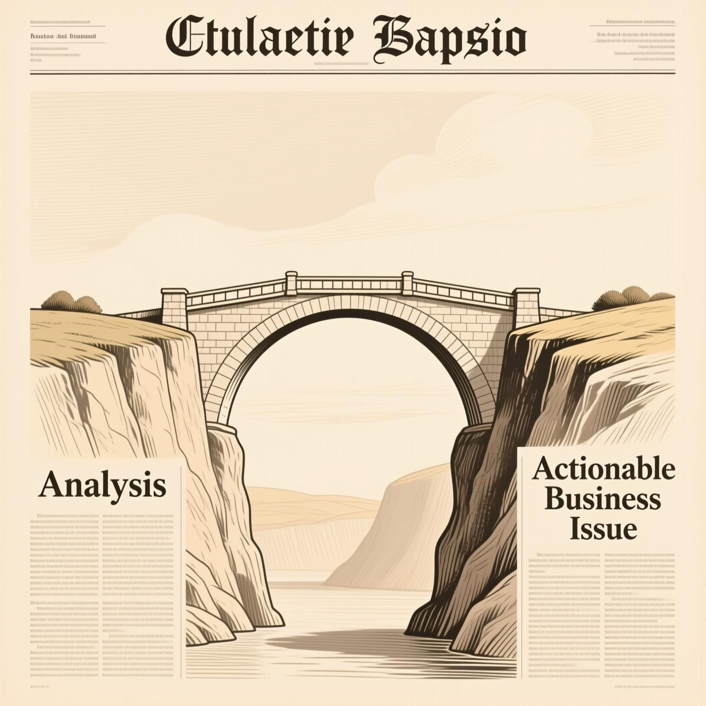

media - the sistar post - sistar herald
sistar herald
"THE SISTAR HERALD, Corporate News & K-Pop Hunters — Flagship editorial journalism, global event calendars, and AI-powered cultural media driving the Signal Star Universe."
▫️ THE SISTAR HERALD & Global Corporate Press Chronicles
THE SISTAR HERALD is our official editorial journal and press archive—publishing deep-dive reports on AI technology shifts, new venture launches, and cross-border commercial milestones:
- • Feature Reports on the AI Commerce & Agent Revolution: Covers the launch of Scarlet.ai, SISTAR AI Agent Builder, SISTAR AI Marketing Agency, and the global shift from static software tools to relational AI Companions.
- • Corporate Event Calendars & Regional Summits: Documents monthly partner roadshows, Indonesian and ASEAN commercial schedules, and Challenger orientation milestones.


▫️ K-Pop Hunters & Viral Cultural Media Factory
Produced 24/7 by SISTAR Studio, our cultural media channels convert global K-Wave enthusiasm into direct e-commerce traffic:
- • K-Pop Hunters Showcase: Connects global K-Pop, K-Beauty, and K-Lifestyle fandoms through AI-generated short-form video series, interactive community challenges, and shoppable QR broadcasts linked directly to scarlet-ai.

▫️ Detailed Archive: THE SISTAR HERALD
Comprehensive operational records, strategic frameworks, and source specifications preserved from THE SISTAR HERALD:
- • Your Daily Signal in a World of Noise.
- • SEOUL, KOREA — AUGUST 26, 2025 — VOL. 1, NO. 1
- • FROM THE PUBLISHER'S DESK: AN INTRODUCTION
- • In an era of infinite information, clarity is the ultimate competitive advantage. We are drowning in data but starved for wisdom. Every day, countless articles, reports, and social media posts are published.
- • Hidden within this relentless flood are the signals—the critical pieces of information that can inspire a new venture, pivot a strategy, or define an entire market.
- • But who has the time to find them?
- • This is the fundamental question that led to the creation of The SISTAR Herald .
- • We are not another news aggregator. We are an issue generator . We are not here to tell you what happened; we are here to show you what to do next .
- • Identifying Opportunities
- • Successful leaders don't just consume news—they actively seek problems to solve and opportunities to seize.
- • They look for the pivotal "issue" that will form the foundation of their next innovative venture or business model.
- • Our core purpose at The SISTAR Herald is to automate this crucial hunt for actionable insights and emerging trends.
- • A New Blueprint for News: Our Foundation
- • The Shifting Landscape
- • The digital media landscape is undergoing a seismic shift. The era of the monolithic, one-size-fits-all news portal is fading. We've studied the pioneers of this new age—from the "smart brevity" of platforms like Axios to the deep, niche analysis of subscription newsletters like Stratechery and The Information.
- • They proved that audiences don't want more content; they want better-curated, high-signal intelligence that respects their time and sharpens their thinking.
- • Filling the Critical Gap
- • However, a critical gap remains. While these platforms excel at analysis, the initial step of identifying the core, actionable business issue is still left to the reader.
- • The SISTAR Herald fills that gap. We are built on a foundation of full automation, designed not merely to report on the world but to systematically deconstruct it into its core components: projects, business models, and actionable next steps.
- • To be the indispensable compass for the world's innovators, builders, and entrepreneurs, transforming the global flood of information into a clear, daily stream of actionable business inspiration.
- • To leverage proprietary automation to systematically scan the digital horizon, collecting and generating the most potent business issues of the day. We are committed to delivering a daily, distilled report that moves our subscribers from passive reading to active building.
- • Continuously monitor thousands of sources across the digital landscape
- • Identify patterns, problems, and opportunities with business potential
- • Transform raw intelligence into structured, actionable formats
- • Provide clear, concise intelligence through your preferred channels
- • Issue Collecting & Generating
- • Our automated systems parse thousands of sources—from news and RSS feeds to market reports and academic journals—not for keywords, but for patterns, problems, and opportunities. We don't just find topics; we formulate issues .
- • Using a suite of tools (including Zapier, Make, and custom integrations), we synthesize this raw intelligence into a structured format. We identify the core challenge and outline the components required for a potential business model.
- • The finished intelligence is delivered directly to you through the channels you already use: our dedicated platform, your favorite social networks, and a crisp daily newsletter that cuts through the clutter.
- • Our Values: The SISTAR Herald Promise
- • We are ruthlessly committed to filtering out the insignificant. If it doesn't present a clear problem to solve or an opportunity to build upon, you won't see it in The Herald.
- • Automation as an Amplifier
- • We believe technology should serve human ingenuity. Our automation isn't about replacing thought; it's about eliminating the friction between a great idea and its execution.
- • Unwavering Objectivity
- • We pursue truth with rigor, presenting insights free from bias or sensationalism, empowering you to make informed decisions.
- • Every piece we publish must answer the question: "What business can be built from this?" We provide the spark, the framework, and the inspiration to do the work.
- • We will be open about our processes and the automated systems we use. Trust is built on understanding how the intelligence is gathered and processed.
- • As a seasoned marketer with two decades of experience, I understand the critical importance of a powerful launch narrative. Your introduction page is not just a welcome mat; it's your manifesto. It must immediately communicate your unique value proposition and build a tribe around your brand.
- • The SISTAR Herald is designed to resonate with your target audience and establish a strong brand identity from day one. The layout and tone are inspired by classic, authoritative newspapers but retooled for the digital age of automation and actionable intelligence.
- • The Digital Media Landscape
- • Monolithic, one-size-fits-all news portals dominated the information landscape
- • "Smart brevity" platforms like Axios and niche analysis newsletters like Stratechery have changed how we consume information
- • The SISTAR Herald bridges the final gap: automatically identifying actionable business issues from the information flood
- • From Information to Action
- • We are not here to tell you what happened; we are here to show you what to do next .
- • The most successful entrepreneurs and business leaders don't just consume news—they hunt for problems to solve and opportunities to seize. They look for the "issue" that will become the foundation of their next business model.
- • Our purpose is to automate that hunt for you.
- • News Aggregators collect and organize existing content, focusing on what has already happened, and leaving the analysis to the reader.
- • Analysis Platforms provide expert interpretation and explain why things happened, but still require you to identify actionable opportunities.
- • The SISTAR Herald generates actionable business issues, showing you what to do next and transforming passive reading into active building.
- • Our automated systems parse thousands of sources—from news and RSS feeds to market reports and academic journals—to gather raw intelligence.
- • We apply sophisticated algorithms to identify patterns, problems, and opportunities with significant business potential, filtering out the noise.
- • Using a suite of tools, we synthesize this intelligence into a structured format, formulating core business issues and outlining components for potential business models.
- • The finished intelligence is delivered directly to you through preferred channels, empowering you to move from passive reading to active building.
- • Welcome to The SISTAR Herald .
- • Stop drowning in data. Start building the future.
- • Join the community of innovators, builders, and entrepreneurs who are transforming information into opportunity.

▫️ Detailed Archive: Kalender Acara Perusahaan SISTAR - September 2025
Comprehensive operational records, strategic frameworks, and source specifications preserved from Kalender Acara Perusahaan SISTAR - September 2025:
- • Kalender Acara Perusahaan SISTAR - September 2025
- • Bulan September 2025 menjadi momentum penting bagi SISTAR dengan rangkaian acara strategis yang dirancang untuk memperkuat posisi perusahaan di industri. Dari pengembangan tim internal hingga ekspansi bisnis baru, setiap acara memiliki peran vital dalam mencapai visi perusahaan.
- • Workshop SISTAR Company: Membangun Sinergi Tim
- • September 2025 Ruang Konferensi Utama
- • Pengembangan keterampilan kolaborasi dan inovasi proyek tim
- • Meningkatkan efektivitas kerja tim dan komunikasi antar departemen
- • Workshop dua hari ini dirancang khusus untuk membangun fondasi kerja sama yang kuat antar tim. Setiap peserta akan terlibat dalam sesi interaktif yang menekankan pentingnya sinergi dalam mencapai target perusahaan.
- • Hiring SISTAR Challenge: Rekrutmen Rekan Proyek Baru
- • Berlangsung sepanjang September 2025 dengan berbagai tahapan seleksi komprehensif
- • Mencari talenta terbaik untuk bergabung dalam proyek strategis perusahaan dengan standar tinggi
- • Kompetisi tantangan berbasis kasus nyata untuk menguji kemampuan dan kreativitas kandidat
- • Memperkuat tim dengan profesional berkualitas yang siap berkontribusi maksimal bagi kemajuan SISTAR
- • Bergabung dan Berkembang Bersama SISTAR
- • Setiap langkah yang kita ambil hari ini akan menentukan masa depan perusahaan yang lebih cemerlang
- • Partnership untuk Bisnis Pet: Ekspansi Pasar Baru
- • Pengumuman Kemitraan Strategis
- • SISTAR dengan bangga mengumumkan kemitraan resmi dengan perusahaan pet care terkemuka untuk membuka peluang bisnis baru yang menjanjikan.
- • "Kemitraan ini merepresentasikan komitmen kami untuk terus berinovasi dan memperluas jangkauan layanan kepada segmen pasar yang memiliki potensi pertumbuhan tinggi."
- • Memperluas lini produk dan layanan untuk pelanggan pecinta hewan
- • Meningkatkan pangsa pasar dan diversifikasi bisnis SISTAR
- • Peluncuran produk bersama dimulai Oktober 2025
- • Kampanye pemasaran terintegrasi multi-platform
- • Konferensi AI untuk Manajemen & Otomasi Penuh
- • September 2025 Auditorium Utama
- • Manajemen puncak dan tim IT untuk sinergi implementasi
- • Implementasi AI untuk otomatisasi proses bisnis dan pengambilan keputusan cerdas
- • Studi kasus sukses dan demo teknologi AI terbaru yang siap diterapkan
- • Masa Depan Otomasi di SISTAR
- • Transformasi digital yang akan mengubah cara kita bekerja dan berkembang
- • Dampak Acara Terhadap Perusahaan
- • Workshop dan hiring challenge memperkuat budaya inovasi dan kolaborasi di seluruh lini organisasi, menciptakan lingkungan kerja yang dinamis dan produktif.
- • Kemitraan pet business membuka peluang pendapatan baru dan meningkatkan loyalitas pelanggan melalui diversifikasi layanan yang relevan.
- • Konferensi AI mempercepat transformasi digital dan efisiensi operasional melalui implementasi teknologi canggih yang terukur.
- • Cara Mengikuti dan Mendukung Acara
- • Daftar workshop dan challenge melalui portal internal perusahaan dengan mengakses menu "Event Registration"
- • Informasi lengkap partnership dan update produk tersedia di newsletter bulanan edisi September
- • Registrasi AI Conference
- • Kirim email ke tim HR sebelum 20 September 2025 untuk mengamankan tempat di konferensi AI
- • Pastikan untuk mendaftar segera karena kapasitas terbatas dan antusiasme tinggi dari seluruh tim perusahaan!
- • Mari Bersama Mewujudkan SISTAR yang Lebih Hebat!
- • Kehadiran dan keterlibatan Anda adalah kunci sukses setiap acara dan pertumbuhan berkelanjutan perusahaan
- • Jadilah bagian dari inovasi dan transformasi positif yang akan membawa SISTAR ke level berikutnya
- • Hubungi tim HR untuk pertanyaan detail dan bantuan pendaftaran di semua acara September 2025